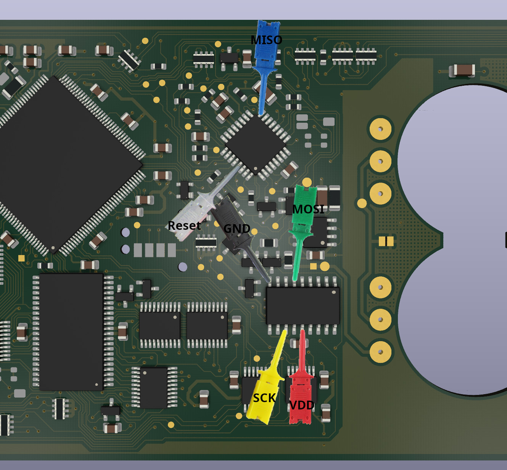
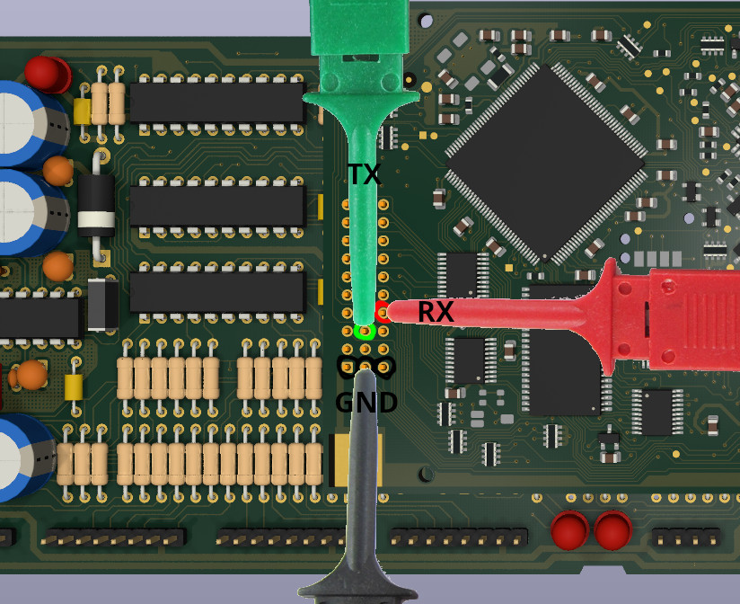

Datenbanken reparieren
Kurzfassung
- Batterien ausbauen
- Atmel beschreiben
- Datenbank beschreiben (zum Test)
- Neue Batterien einbauen
- Datenbank beschreiben (final)
Die Datenbank selbst
Die Datenbank hat zwei Schutzschaltungen, diese müssen deaktiviert werden damit das Programm nicht gleich wieder verloren geht.
Um diese zu deaktivieren, muss die Datenbank geöffnet werden, wobei die Schutzschaltungen auslösen.
Deswegen dies auch erst versuchen wenn die Datenbank schon leer ist.
Es bringt nichts dies vorher schon "auf Reserve" zu machen.
Auslesen lässt sich die Datenbank über die serielle Schnittstelle, ohne diese zu öffnen.
"Kaputt"
Es wird oft beschrieben dass die Datenbank nach dem öffnen "kaputt" oder "defekt" sei.
Damit ist in der Regel gemeint dass sie im Automaten nicht mehr ihre Funktion erfüllt.
Die Datenbank trägt keinen physischen Schaden davon.
Darauf achten sollte man dass die Datenbank mehr Strom aus den Batterien bezieht (und diese sich sehr schnell entladen) wenn das Gerät ausgeschaltet ist und die Tür offen ist.
Das liegt an einer Funktion, die protokolliert wann die Tür geöffnet wurde.
Schutzschaltungen
Ist die Datenbank dann leer, kann man diese öffnen indem man den Aufkleber drum herum mit einem Messer an der Kante entlangt einschneidet.
Der Blechdeckel darunter ist geklipst und lässt sich mit einer Plastikkarte oder einem Schraubendreher lösen.
Spätestens jetzt ist die Datenbank leer, wir haben die erste Schutzschaltung ausgelöst.
Bohrschutz
Im Deckel ist eine Bohrschutzplatine die einen Kontakt zur Datenbank hat.
Auf der Datenbank sieht man 4 rechteeckige Pads direkt nebeneinander in der Mitte, diese kann man in 2er Paaren oder vollständig mit einer Lötbrücke versehen.
Neuere Modelle sind noch zusätzlich verschraubt.
Lichtsensor
Als nächstes kommen die Lichtsensoren, diese haben 3 Beine und sehen wie im Bild aus
Diese kann man entweder mit einem flachen Seitenschneider abknipsen oder entlöten.

Atmega
Auf den Datenbanken 1MB Redesign und größer sitzt ein Atmega48 der die Schutzschaltung überwacht und mit der Datenbank kommuniziert.
Dieser merkt sich das die Schutzschaltungen ausgelöst wurden und muss deswegen zurückgesetzt werden.
Auf der Platine sind Testpunkte über die das beim Hersteller gemacht wurde.
Diese kann man anlöten, Testclips oder eine Pogo-Pin Schablone wie beim Hersteller verwenden.

Das geht mit allen ISP-Tools die Atmega beschreiben können. Beispielsweise USBASP, alle Arduinos oder viele EEPROM-Brenner.
Die Programmversion aus dem Discord deaktiviert das Schutzprogramm dauerhauft sodass der Atmel nur ein mal beschrieben werden muss.
Da der Atmega die Schutzschaltungen überwacht, müssen bei diesen Versionen keine Bauteile mehr gelötet oder entfernt werden.
Seriell neu bespielen
Um das Spielprogramm zu übertragen muss man von einem PC aus eine serielle Verbindung zur Datenbank herstellen.
Leider geht das nicht über die normale Ausleseschnittstelle des Automaten.
Auf der Unterseite der Merkur Profitech 3000 (EU) Steuereinheit gibt es am Stecker P4 zur Datenbank 2 unbelegte Kontakte, dort verbindet man Masse und die beiden Kontakte mit einem USB-TTL Adapter

Alternativ kann man auch die Testclips aus dem vorherigen Abschnitt verwenden ohne die Steuereinheit auszubauen.
Hier ist ein Link zu einer Webanwendung mit der sich die Daten programmieren lassen.
Die Offline-Variante ohne die Webanwendung braucht ein Programm das per seriell erst einen sogenannten Loader überträgt.
Dieser macht die Datenbank annahmebereit für weitere Befehle, das Setzen der Uhrzeit, das Rücksetzen des NVRAM, das Spieleprogramm und bei neueren Geräte schlussendlich eine Konfiguration welche Spiele verfügbar sind.
Bei neueren Steuereinheiten in SMT-Bauweise gibt es eine Besonderheit mit dem RS485-Transceiver, der eine zuverlässige Übertragung verhindert.
Diese Modelle sind üblicherweise bei Profitech NT Geräten verbaut und bereits mit dem integrierten PC verbunden.

Bootvorgang
Beschrieben in Patent DE10142537A1
Als erstes geht der Atmega Sicherheitsprozessor an.
Dieser stellt eine BDM-Verbindung zum Hauptprozessor her, liest den RAM-Speicher aus, errechnet die Checksumme und vergleicht diese.
Wenn die Datenbank leer ist (oder die Checksumme falsch) sendet der Atmega einen Ur-Lader aus seinem EEPROM-Inhalt an den Prozessor.
Dieser wird an Speicheradresse 0x3c0 geschrieben und gestartet. Die CPU wird dann neu gestartet und der Ur-Lader ausgeführt.
Der Ur-Lader wartet an der integrierten seriellen Schnittstelle auf Daten und schreibt diese nach 0x400. Nach Ende der Übertragung gibt der Ur-Lader die Kontrolle zurück an den Atmega.
Beim Wiederherstellen der Datenbank ist das übertragene Programm üblicherweise ein weiterer Lader, der eine Entschlüsselungsfunktion mitbringt.
Durch diesen Lader wird die Uhrzeit gesetzt und das erste verschlüsselte Programm geladen. Dieses ist üblicherweise ein kleines Programm dass den RAM-Speicher korrekt leert.
Im letzten Schritt wird das verschlüsselte Spielprogramm geladen. Dieses ist im gleichen Format wie es sich auch auslesen lässt.
Zurück